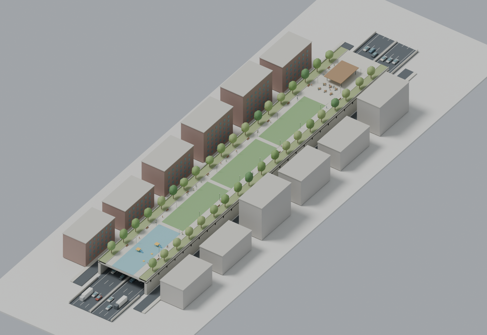

A narrow garden above the road.
Space is tight along the Deegan. This model puts a slender park over the highway, with three lanes in each direction below and supports outside the vehicle lanes.

Drag to rotate; scroll or pinch to zoom. The cutaway hides one quarter of the deck so you can see the highway. It isn't a proposed opening in the park.
The space above the traffic
The model combines a central lawn with two walking paths, engineered planting strips, benches, a small play area and a seating pavilion. Side abutments carry the deck in this illustration.
These dimensions are design assumptions. A survey must establish the Deegan's grades, ramps, clearance, utilities and available land. The model's surrounding buildings are simplified context.
The editable model
The Blender file contains separate highway, structure, landscape, furniture and context collections. The GLB files open in common 3D viewers.
How the road sits underneath